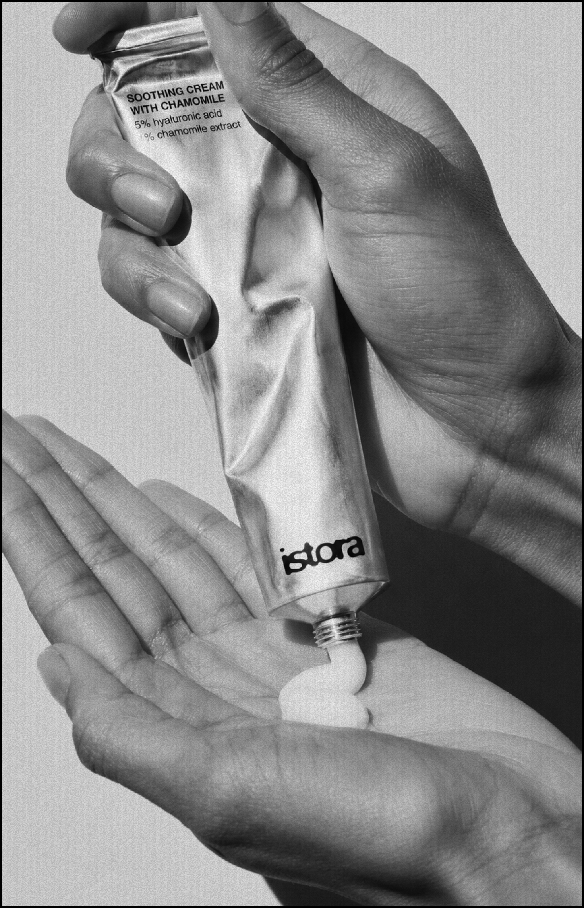

Одним из ключевых шагов в уходе за раздражённой кожей является качественное увлажнение. Когда коже не хватает влаги, её защитные функции ослабевают, что делает её более восприимчивой к внешним раздражителям. Поэтому в ежедневном уходе стоит выбирать средства, которые одновременно успокаивают и поддерживают естественный баланс кожи.
Для борьбы с покраснениями отлично подходит крем для лица Istora Soothing Cream with Chamomile. Формула сочетает экстракт ромашки, известный своими успокаивающими свойствами, и гиалуроновую кислоту, которая помогает удерживать влагу в коже и поддерживает её комфорт в течение дня. Крем обладает лёгкой текстурой, быстро впитывается и не оставляет ощущения тяжести.